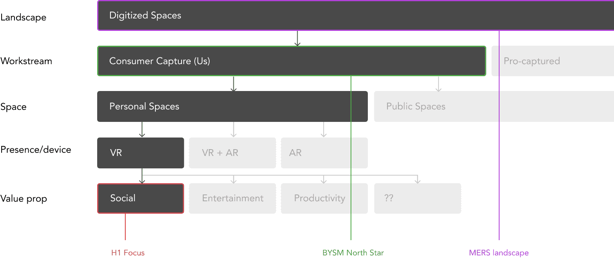
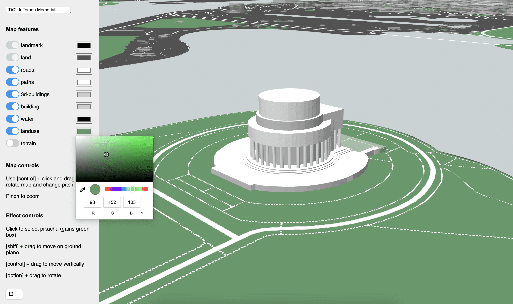
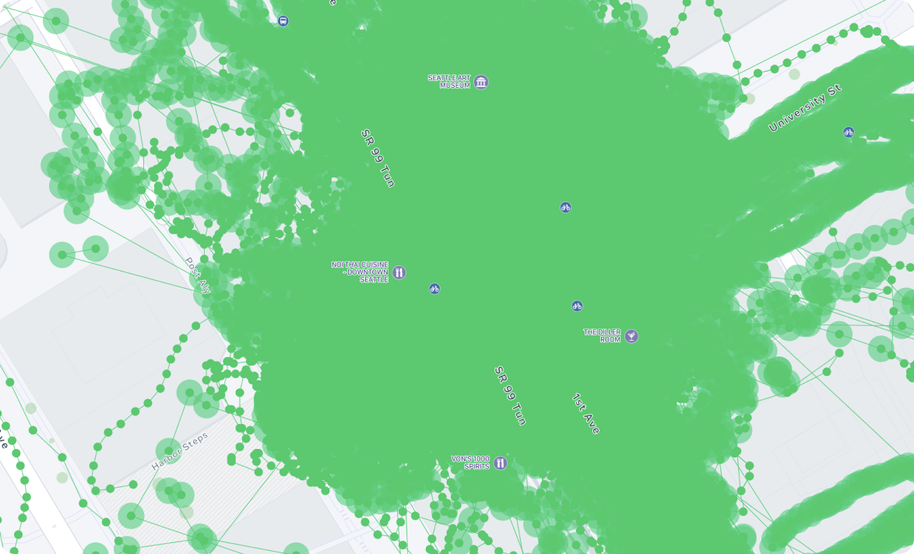
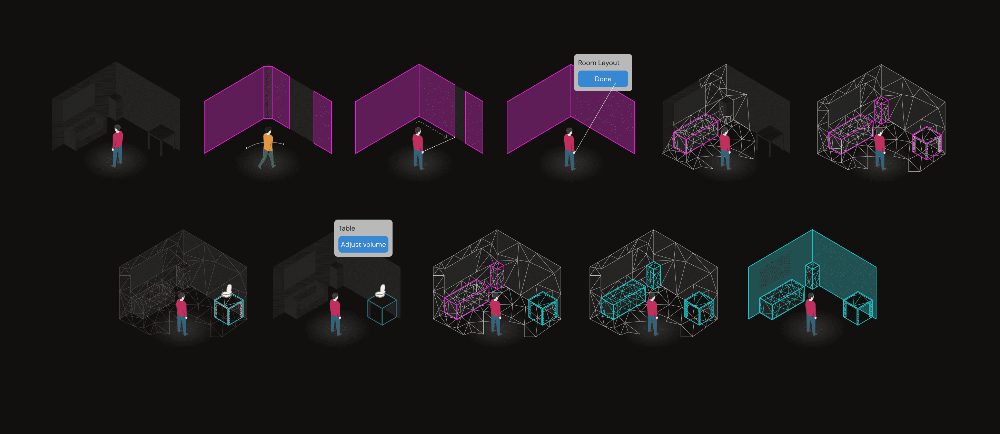
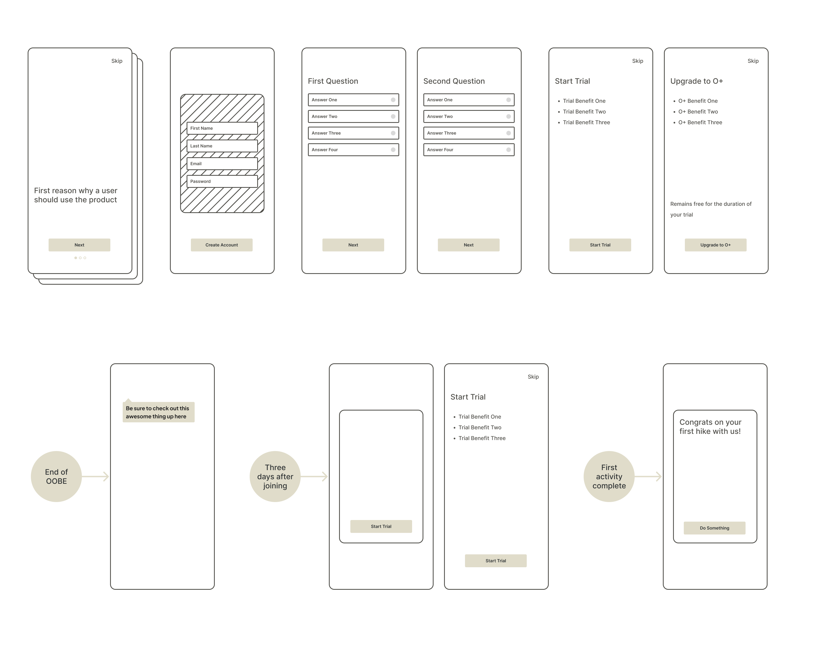
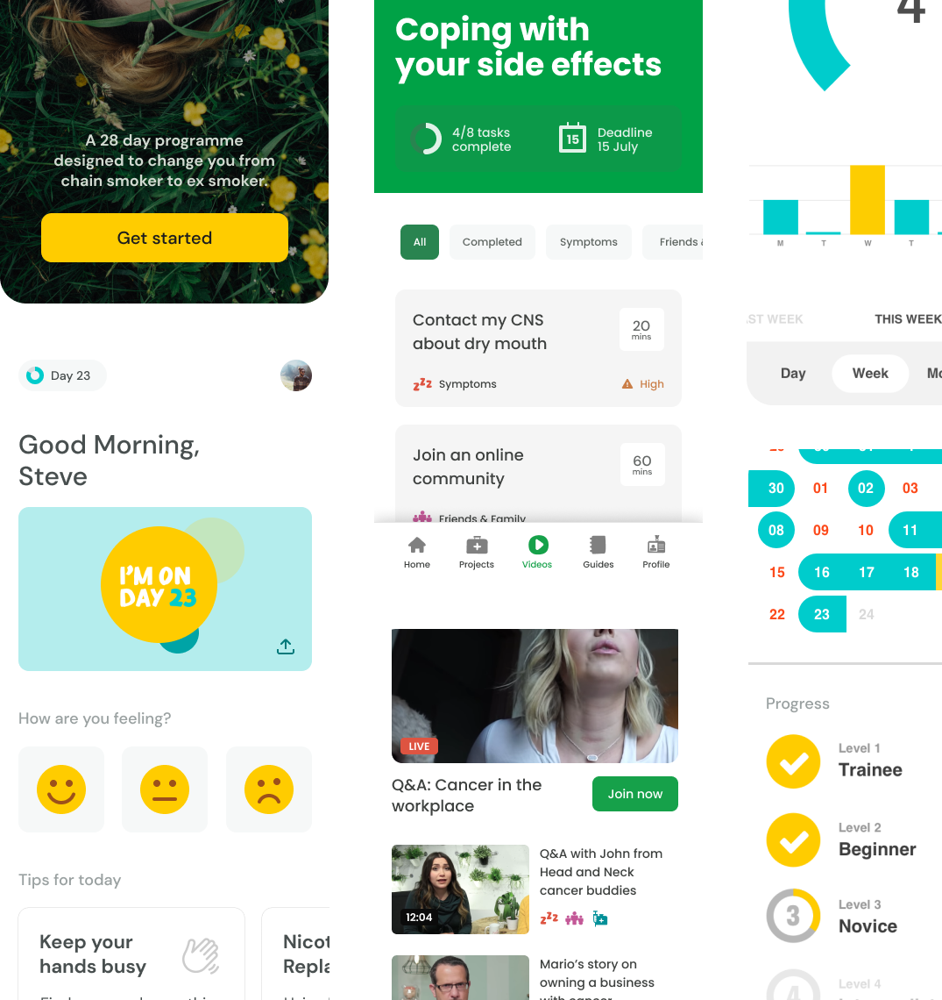
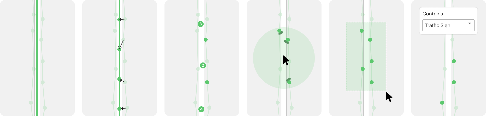
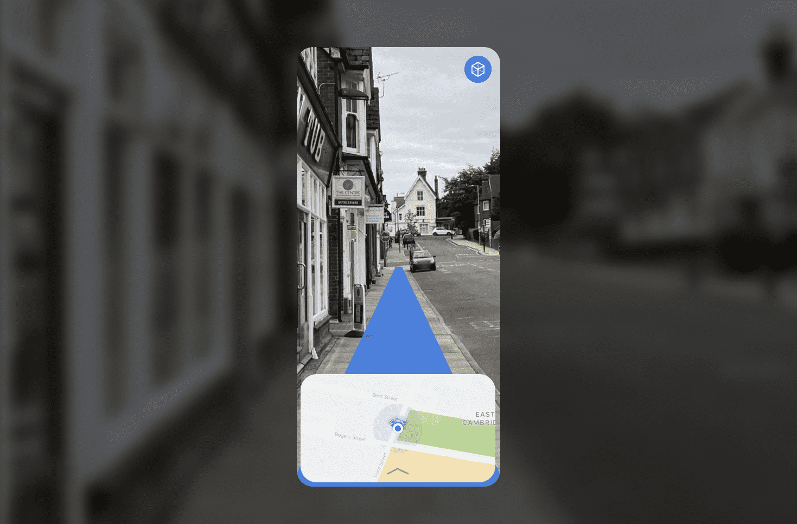

Narrowing in on a core and definable opportunity in an undefined and systemic problem space
Framed the opportunity space, constraints, and strategic bets before execution began.
I help teams navigate ambiguity by aligning people, context, and constraints into clear strategic direction—and the decision systems to sustain it.

The challenge: Multiple stakeholders with competing priorities and no shared understanding of the opportunity space. We needed to align on what success looked like before committing resources.

I facilitated a series of workshops to map the competitive landscape, identify unmet user needs, and articulate the strategic trade-offs. This created a shared artifact that teams could reference throughout execution.
xxx

Direction before features

Took a loose idea to validated MVP

Early MR concepts under uncertainty
Helping teams move from loose ideas and unknowns to well-framed problems, tested concepts, and confident early bets.
Defined opportunity space and early direction

Took a loose idea to validated MVP

Early MR concepts under uncertainty
Specializing in cross-product experiences where success depends on shared mental models and long-term evolution.

Unified onboarding across products
Shared mapping capabilities
Platform primitives and alignment
Delivering high-quality UX in regulated, data-dense, and technically complex environments.

Patient-facing regulated systems
Data-dense mapping UX
Shipped production work
Maps are systems, not just visuals. This work makes spatial data legible and useful.

Spatial imagery tools
Independent cartographic work

XXXX